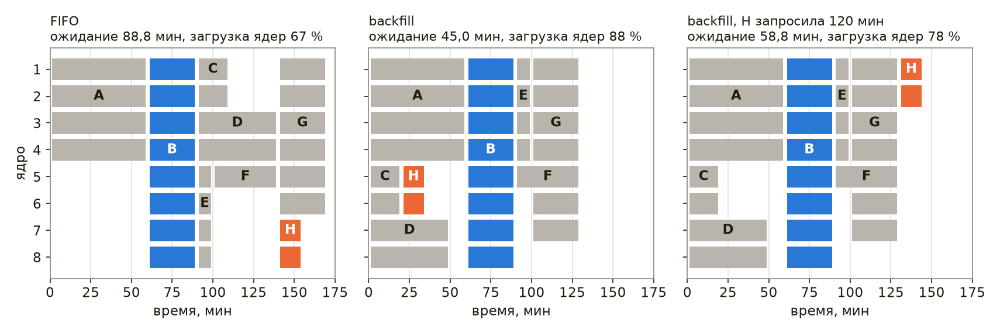
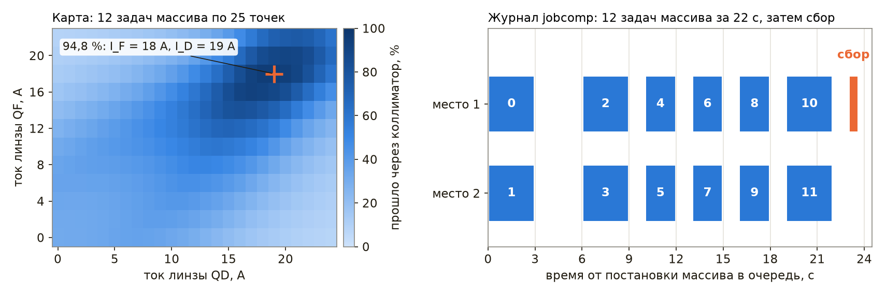
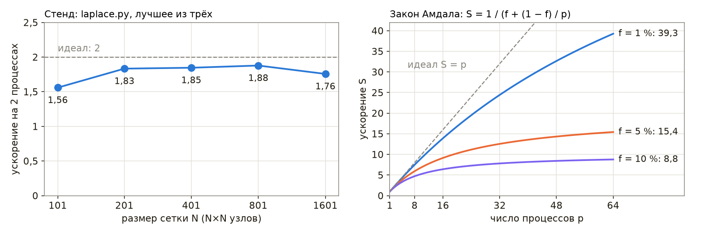

Кластеры и воспроизводимое окружение для расчётов
Глава «CUDA и вычисления на GPU» подводит итог разделу лестницей ускорения. Её первые ступени — профилирование, проверка алгоритма, векторизация, компиляция, распараллеливание на процессоре и перенос на видеокарту — используют ресурсы одной машины всё полнее, а последней ступени, кластеру, посвящена настоящая глава. Расчёт, которому одной машины недостаточно, переносится на вычислительный кластер — набор машин с общей файловой системой и быстрой сетью, ресурсы которого распределяет планировщик. Типичных случаев два. В первом расчёт состоит из сотен независимых частей: скан параметров магнитной оптики, серия Монте-Карло детектора с разными зёрнами, обработка тысяч файлов с установки. Во втором один расчёт настолько велик, что его приходится делить между процессами на разных узлах, и процессы обмениваются данными на каждом шаге: задачи электродинамики, расчёт пучка с пространственным зарядом, решение уравнения Пуассона на большой сетке.
Перенос на кластер ставит ещё две задачи, о которых на рабочем компьютере задумываться не приходится. Окружение расчёта — версии Python, NumPy и системных библиотек — на узлах кластера иное, и результат, полученный на рабочем компьютере, должен воспроизводиться там без изменений. Машины, на которых выполняются расчёты, — узлы кластера, стенды, компьютеры сбора данных — необходимо настраивать одинаково и повторяемо, иначе через год никто не скажет, чем одна машина отличается от другой.
В настоящей главе рассматриваются планировщик Slurm и устройство кластера, массивы задач для независимых расчётов, библиотека MPI и её привязка к Python mpi4py для связанных расчётов, контейнеры Apptainer для воспроизводимого окружения и система управления конфигурацией Ansible; в завершение кратко описаны Kubernetes и Terraform и пределы их применимости к физическим расчётам. Сквозным примером служат расчёты ускорительной лаборатории: скан токов квадрупольного дублета, Монте-Карло эффективности сцинтилляционного счётчика и расчёт электростатического потенциала в камере. Листинги на Python выполнены на macOS под Python 3.12 с NumPy 2.5.3, mpi4py 4.1.2 и Open MPI 5.0.11 из колеса PyPI. Демонстрации лекции «Кластеры и воспроизводимое окружение для расчётов» записаны на виртуальной машине с Ubuntu 24.04 (процессор ARM64, два ядра), на которой развёрнут одноузловой учебный кластер, далее называемый стендом: Slurm 23.11.4, Open MPI 4.1.6 из пакетов Ubuntu, NumPy 2.5.3 и mpi4py 4.1.2 в окружении Python 3.12.3, Apptainer 1.5.4 и ansible-core 2.21.4. На стенде выполнены пакетные скрипты, команды Slurm и Apptainer и плейбуки главы, а числа со ссылкой на демонстрацию к лекции взяты из этих записей.
Слайды к главе. Планировщик и Slurm, массивы задач, MPI из Python, образы Apptainer, Ansible, Kubernetes и Terraform изложены также в лекции «Кластеры и воспроизводимое окружение для расчётов» с демонстрациями в терминале; слайды лекции доступны на сайте книги и в PDF.
Вычислительный кластер и планировщик
Слайды к главе. Устройство кластера, планировщик и очередь, резервирование и заполнение промежутков изложены также в первой части лекции «Кластеры и воспроизводимое окружение для расчётов» с демонстрацией в терминале; слайды лекции доступны на сайте книги и в PDF.
Устройство кластера
Вычислительный кластер состоит из машин нескольких назначений. Узел входа (login node) является точкой подключения пользователей по ssh: на нём редактируют программы, собирают их и ставят задачи в очередь, но не считают. Вычислительные узлы выполняют задачи; на крупных кластерах их сотни и тысячи, часть из них оснащена видеокартами. На управляющем узле работает планировщик: он принимает задачи, ведёт очередь и следит за состоянием узлов. Все узлы видят общую файловую систему. Обычно она представлена двумя областями: домашним каталогом с небольшой квотой и резервными копиями и рабочей областью (scratch) — большой и быстрой, без резервных копий и с периодической очисткой. Для небольших кластеров применяется NFS, для крупных — параллельные файловые системы наподобие Lustre. Узлы соединены быстрой сетью (InfiniBand или Ethernet с RDMA), по которой процессы одного расчёта обмениваются данными. Программное обеспечение на узлах обычно подключается модулями окружения (module load gcc openmpi), что позволяет держать на кластере несколько версий компиляторов и библиотек одновременно.
Различают два режима использования. HPC (high-performance computing) — плотно связанные расчёты, один расчёт занимает много узлов, и процессы обмениваются данными на каждом шаге; для них важны быстрая сеть и одновременный запуск всех процессов. HTC (high-throughput computing) — множество независимых задач, каждая на одном-двух ядрах; для них важна пропускная способность очереди. Физика высоких энергий исторически опирается на HTC — обработку событий детектора, — а расчёты плазмы и пучков с самосогласованным полем требуют HPC.
Планировщик и очередь
Ресурсы кластера распределяет планировщик (batch scheduler, менеджер ресурсов). Пользователь не выбирает узел сам: он отправляет задачу — скрипт и запрос ресурсов, то есть число ядер, объём памяти, лимит времени, число узлов и видеокарт. Планировщик ставит задачу в очередь и запускает её, когда запрошенные ресурсы освобождаются; на время работы задачи они принадлежат только ей. Порядок запуска определяется приоритетом, в котором учитываются время ожидания, размер задачи и справедливая доля (fair-share): пользователь, много считавший в последние дни, ждёт дольше. Лимит времени является обещанием пользователя: задача, превысившая его, снимается.
Наиболее распространённым планировщиком в научных вычислениях является Slurm, разработанный в Ливерморской национальной лаборатории имени Лоуренса с 2002 года [56] и развиваемый компанией SchedMD; в декабре 2025 года SchedMD купила компания NVIDIA, объявившая, что Slurm останется открытым программным обеспечением, не привязанным к оборудованию одного производителя. Применяются также OpenPBS и PBS Pro, HTCondor (массовая обработка, в том числе в CERN) и LSF. Kubernetes, о котором сказано в конце главы, распределяет ресурсы между долгоживущими службами и для пакетных расчётов на кластере используется реже.
Резервирование и заполнение промежутков
Простейшая очередь запускает задачи строго по порядку (FIFO). Её недостаток виден, когда в очереди находится большая задача: пока для неё освобождаются ядра, остальные ядра простаивают, хотя следом за ней ждут небольшие задачи. Планировщики поэтому применяют заполнение промежутков (backfill). В схеме EASY первой задаче очереди резервируется ближайший момент, когда для неё освободится достаточно ядер, а следующие задачи запускаются раньше неё при условии, что по запрошенному лимиту времени они закончатся до резерва или займут ядра, которые резерву не нужны. Существенно, что планировщик знает только лимит, а не фактическую длительность задачи. Slurm поступает осторожнее: задачу с меньшим приоритетом он запускает раньше, только если она не сдвигает ожидаемого старта ни одной из более приоритетных задач (консервативная схема), а ожидаемое время старта задачи, ждущей в очереди, сообщает команда squeue --start.
Рассмотрим модель: восемь задач поставлены в очередь на 8 ядер одновременно, у каждой заданы число ядер, фактическая длительность и лимит. Третий вариант отличается от второго единственной задачей H, которая запросила 120 минут «с запасом» вместо достаточных ей 20.
CORES = 8
JOBS = [("A", 4, 60, 60), ("B", 8, 30, 40), ("C", 2, 20, 30), ("D", 2, 50, 60),
("E", 4, 10, 15), ("F", 1, 40, 45), ("G", 6, 30, 35), ("H", 2, 15, 20)]
def simulate(jobs, backfill):
"""Старт и конец каждой задачи; все задачи поставлены в очередь в момент 0."""
queue, running, start, t = list(jobs), [], {}, 0
while queue or running:
free = CORES - sum(r[2] for r in running)
while queue and queue[0][1] <= free: # голова очереди помещается
name, cores, run, limit = queue.pop(0)
running.append((t + run, t + limit, cores))
start[name], free = t, free - cores
if backfill and queue: # резерв для головы очереди
avail = free
for _, end_limit, cores in sorted(running, key=lambda r: r[1]):
avail += cores
if avail >= queue[0][1]:
reserve, spare = end_limit, avail - queue[0][1]
break
for job in list(queue[1:]):
name, cores, run, limit = job
in_time = t + limit <= reserve
if cores <= free and (in_time or cores <= spare):
queue.remove(job)
running.append((t + run, t + limit, cores))
start[name], free = t, free - cores
spare -= 0 if in_time else cores
t = min(r[0] for r in running) # следующее завершение
running = [r for r in running if r[0] > t]
return {n: (start[n], start[n] + run) for n, _, run, _ in jobs}
padded = [(n, c, r, 120 if n == "H" else lim) for n, c, r, lim in JOBS]
print("вариант ожидание, мин конец, мин загрузка старт H, мин")
for title, jobs, bf in [("FIFO", JOBS, False), ("backfill", JOBS, True),
("backfill, H просит 120", padded, True)]:
s = simulate(jobs, bf)
wait = sum(v[0] for v in s.values()) / len(s)
end = max(v[1] for v in s.values())
busy = sum(c * r for _, c, r, _ in jobs) / (CORES * end)
print(f"{title:<22} {wait:13.1f} {end:11d} {busy:9.0%} {s['H'][0]:13d}")
вариант ожидание, мин конец, мин загрузка старт H, мин
FIFO 88.8 170 67% 140
backfill 45.0 130 88% 20
backfill, H просит 120 58.8 145 78% 130
Большая задача B, занимающая все 8 ядер, в обоих случаях стартует в 60 минут, когда завершается задача A, но при заполнении промежутков задачи C, D и H успевают выполниться до неё. Среднее ожидание сокращается с 88,8 до 45,0 минуты, загрузка ядер растёт с 67 до 88 %. Если же задача H запрашивает 120 минут, она уже не помещается в промежуток до резерва и стартует на 110 минут позже. Таким образом, точный лимит времени выгоден прежде всего самому пользователю. Для системы в целом завышенные оценки обходятся дешевле, чем можно ожидать: моделирование заполнения промежутков на нагрузке машин IBM SP2 привело к неожиданному результату — при оценках, завышенных в несколько раз, средние показатели очереди даже улучшаются [62]. Проигрывает же задача, запросившая лишнее.

Slurm
Слайды к главе. Службы и команды Slurm, пакетный скрипт, ресурсы и лимиты, учёт изложены также во второй части лекции «Кластеры и воспроизводимое окружение для расчётов» с демонстрациями в терминале; слайды лекции доступны на сайте книги и в PDF.
Устройство и команды
Slurm состоит из нескольких служб. Контроллер slurmctld ведёт очередь, планирует запуск и следит за состоянием узлов. На каждом вычислительном узле работает slurmd, который запускает процессы задачи через вспомогательную программу slurmstepd. Подлинность сообщений между ними обеспечивает служба munge, использующая общий ключ, одинаковый на всех узлах. Необязательная служба slurmdbd записывает учёт выполненных задач в базу MySQL или MariaDB. Узлы объединяются в разделы (partitions), которые выполняют роль очередей с собственными лимитами: короткие отладочные задачи, длинные расчёты, узлы с видеокартами.
В терминологии Slurm задача (job) представляет собой выделение ресурсов, шаг (step) — запуск программы внутри выделения командой srun, а процессы шага (tasks) — экземпляры этой программы; у задачи из одного шага на одном ядре все три понятия совпадают, у расчёта MPI на нескольких узлах — нет. Пользователь работает с кластером следующими командами.
| Команда | Назначение |
|---|---|
sinfo | состояние разделов и узлов |
squeue | очередь: задачи, их состояние и причина ожидания |
sbatch скрипт | постановка пакетной задачи |
srun программа | запуск шага; вне выделения — выделение и запуск сразу |
salloc | выделение ресурсов для интерактивной работы |
scancel номер | снятие задачи |
scontrol show job номер | подробные сведения о задаче или узле |
sacct | учёт завершённых задач |
Состояние задачи обозначается кратким кодом: PD — ожидает (с причиной, например Resources — ресурсы заняты, Priority — впереди более приоритетные задачи, Dependency — ждёт другую задачу), R — выполняется, CG — завершается, CD — завершена успешно, F — завершилась с ошибкой, CA — снята, TO — превысила лимит времени, OOM — превысила память.
Пакетный скрипт
Задача описывается скриптом командной оболочки, в начале которого строки #SBATCH задают запрос ресурсов. Для оболочки эти строки являются комментариями, а sbatch читает из них параметры, как если бы они были переданы в командной строке.
#!/bin/bash
#SBATCH --job-name=hello
#SBATCH --cpus-per-task=1
#SBATCH --mem=100M
#SBATCH --time=00:01:00
#SBATCH --output=hello-%j.out
# Первая задача: что планировщик выделил и что видит процесс
echo "задача $SLURM_JOB_ID, узел $SLURMD_NODENAME, раздел $SLURM_JOB_PARTITION"
echo "ядер: $SLURM_CPUS_ON_NODE, память: $SLURM_MEM_PER_NODE МБ"
python3 -c 'import os; print("доступны ядра:", sorted(os.sched_getaffinity(0)))'
sleep 5
Задача ставится в очередь командой sbatch hello.sh, которая печатает её номер; %j в имени файла вывода заменяется этим номером. Переменные окружения SLURM_JOB_ID, SLURMD_NODENAME, SLURM_CPUS_ON_NODE, SLURM_MEM_PER_NODE сообщают программе, что ей выделено. По умолчанию задача наследует окружение командной оболочки, из которой её поставили (--export=ALL), поэтому python3 в задаче тот же, что был найден при постановке, — например, интерпретатор виртуального окружения. Последняя строка Python показывает ядра, на которых процессу разрешено выполняться: при включённом ограничении ядер планировщик оставляет задаче ровно одно ядро из двух, даже если узел свободен.
В демонстрации к лекции на стенде, конфигурация которого приведена ниже, эти команды дали следующий вывод:
sinfo
sbatch slurm/hello.sh
sleep 6; cat hello-*.out
PARTITION AVAIL TIMELIMIT NODES STATE NODELIST
main* up 1:00:00 1 idle lab
Submitted batch job 60
задача 60, узел lab, раздел main
ядер: 1, память: 100 МБ
доступны ядра: [0]
Команда sinfo показывает единственный раздел main (звёздочка отмечает раздел по умолчанию) с лимитом времени 1 ч и свободным узлом lab. Задача получила одно ядро и 100 МБ памяти, как и запрошено, а её процессу разрешено выполняться только на ядре 0.
Стенду соответствует следующая конфигурация одноузлового кластера: узел lab с двумя ядрами в одном сокете, которому для задач отведено 3000 МБ из 3,9 ГБ памяти машины, один раздел main с лимитом времени 1 ч, ограничение ядер и памяти через cgroups и журнал завершения задач в текстовом файле. Строку описания узла удобно получить командой slurmd -C, которая печатает конфигурацию оборудования в формате slurm.conf, и уменьшить в ней RealMemory, оставив часть памяти системе.
ClusterName=lab
SlurmctldHost=lab
SlurmUser=slurm
AuthType=auth/munge
SlurmctldPidFile=/run/slurmctld/slurmctld.pid
SlurmdPidFile=/run/slurm/slurmd.pid
StateSaveLocation=/var/lib/slurm/slurmctld
SlurmdSpoolDir=/var/lib/slurm/slurmd
SlurmctldLogFile=/var/log/slurm/slurmctld.log
SlurmdLogFile=/var/log/slurm/slurmd.log
SchedulerType=sched/backfill
SelectType=select/cons_tres
SelectTypeParameters=CR_Core_Memory
DefMemPerCPU=500
ProctrackType=proctrack/cgroup
TaskPlugin=task/cgroup,task/affinity
JobAcctGatherType=jobacct_gather/cgroup
JobCompType=jobcomp/filetxt
JobCompLoc=/var/log/slurm/jobcomp.log
MpiDefault=none
ReturnToService=2
NodeName=lab CPUs=2 CoresPerSocket=2 RealMemory=3000 State=UNKNOWN
PartitionName=main Nodes=lab Default=YES MaxTime=01:00:00 State=UP
Параметр SelectTypeParameters=CR_Core_Memory заставляет планировщик распределять ядра и память, а DefMemPerCPU задаёт память по умолчанию для задач, в которых она не запрошена; без него такая задача получила бы всю память узла, и вторая задача ждала бы, хотя ядро для неё свободно. Файл cgroup.conf рядом включает ограничения строками CgroupPlugin=cgroup/v2, ConstrainCores=yes, ConstrainRAMSpace=yes и ConstrainSwapSpace=yes.
Ресурсы, лимиты и учёт
Запрос ресурсов различает процессы и потоки. Параметр --ntasks задаёт число процессов — его используют программы MPI; --cpus-per-task — число ядер на процесс, то есть потоки OpenMP или библиотеки BLAS, которой пользуется NumPy. Число потоков необходимо согласовать с запросом явно, например export OMP_NUM_THREADS=$SLURM_CPUS_PER_TASK. Библиотека OpenBLAS, с которой собраны колёса NumPy для Linux, и среда OpenMP компилятора GCC по умолчанию запускают столько потоков, сколько ядер разрешено процессу: при ограничении ядер через cgroups это выделенные задаче ядра, а без такого ограничения — все ядра узла, и потоки задачи занимают ядра чужих задач. Функция os.cpu_count() возвращает число ядер узла в любом случае, поэтому пул процессов multiprocessing, размер которого в Python 3.12 выбирается по ней, делит между процессами одно выделенное ядро; число разрешённых ядер даёт len(os.sched_getaffinity(0)), а в Python 3.13 — функция os.process_cpu_count(). Память запрашивается на узел (--mem) или на ядро (--mem-per-cpu).
Выделение обеспечивается механизмом cgroups ядра Linux, описанным в главе «Внутреннее устройство Linux»: процессы задачи помещаются в отдельную группу с ограничением ядер (cpuset) и памяти (memory.max). Процесс, превысивший память, завершается ядром по нехватке памяти, а задача получает состояние OUT_OF_MEMORY; задача, превысившая лимит времени, снимается с состоянием TIMEOUT. Запрос, превышающий возможности раздела в целом, например четыре ядра в разделе из одного двухъядерного узла, как на стенде, при значении по умолчанию EnforcePartLimits=NO не отклоняется: задача принимается и остаётся в очереди с причиной PartitionConfig, пока её не снимут или не изменят конфигурацию раздела. Значения ANY и ALL заставляют контроллер отклонять такую задачу сразу при постановке, как и задачи, превышающие ограничения раздела по размеру и времени. Если же ядер в разделе достаточно, но ни на одном узле их нет в нужном числе, задача отклоняется при постановке при любом значении параметра: «CPU count per node can not be satisfied». Запрос «с запасом» выполним, но обходится дорого: задача дольше ждёт освобождения ресурсов, не помещается в промежутки и занимает место, которое могли бы использовать другие.
В демонстрации к лекции на стенде с двумя ядрами задача, запросившая четыре ядра, была принята и осталась в очереди, а из двух следующих задач по два ядра одна выполнялась, а другая ждала освобождения ресурсов (ключ --wrap превращает строку команды в пакетный скрипт):
sbatch -c 4 --wrap hostname
for i in 1 2; do sbatch -c 2 --wrap 'sleep 10'; done
squeue -o '%.5i %.8j %.2t %.6M %R'
Submitted batch job 61
Submitted batch job 62
Submitted batch job 63
JOBID NAME ST TIME NODELIST(REASON)
63 wrap PD 0:00 (Resources)
61 wrap PD 0:00 (PartitionConfig)
62 wrap R 0:00 lab
После снятия ожидающих задач командой scancel -t PD -u student в очередь поставлена задача, которой запрошено 200 МБ памяти, а сценарий hog.py занимает память блоками по 50 МиБ:
sbatch --mem=200M --wrap 'python3 hog.py 400'
sleep 12; cat slurm-*.out | tail -4 | fold -sw 78
Submitted batch job 64
занято 100 МиБ
занято 150 МиБ
Killed
slurmstepd-lab: error: Detected 1 oom_kill event in StepId=64.batch. Some of
the step tasks have been OOM Killed.
Процесс завершён ядром при попытке занять четвёртый блок: вместе с самим интерпретатором он превысил бы запрошенный объём. Завершённые задачи контроллер показывает ещё MinJobAge секунд (по умолчанию 300 с), и команда squeue -t all выводит их итоговые состояния:
squeue -t all -o '%.5i %.8j %.14T %.6M'
JOBID NAME STATE TIME
61 wrap CANCELLED 0:00
63 wrap CANCELLED 0:00
62 wrap COMPLETED 0:10
60 hello COMPLETED 0:05
64 wrap OUT_OF_MEMORY 0:00
Подбирать запрос по измерениям позволяет учёт. Команда sacct показывает для завершённых задач номер, состояние, время старта и длительность, код завершения и пиковую память (MaxRSS), по которой выбирают --mem; среди дополнительных программ из исходных текстов Slurm (каталог contribs) есть сценарий seff, сравнивающий запрошенное с использованным, — многие центры его устанавливают, в пакеты Ubuntu он не входит. Запрашивают обычно с запасом, например на 20 % больше измеренной памяти и в полтора раза больше измеренного времени. Такой учёт ведёт служба slurmdbd с базой данных. На небольшом кластере или стенде без неё задачи записываются только в журнал завершения (JobCompType=jobcomp/filetxt): одна строка на задачу с её состоянием и временами, без сведений о шагах и памяти. Команда sacct -c читает этот журнал, но в Slurm 23.11 — только от имени root и пользователя, под которым работает контроллер (SlurmUser): загружая модуль журнала, она открывает файл на дописывание, и у обычного пользователя завершается сообщением «sacct: fatal: open /var/log/slurm/jobcomp.log: Permission denied», хотя читать журнал разрешено всем. Поэтому на стенде для просмотра последних задач достаточно команды squeue -t all, а сценарий timeline.py из демонстрации к лекции строит диаграмму массива задач, читая журнал напрямую.
Правила общего кластера
Кластер разделяют десятки пользователей, и у всех центров коллективного пользования похожие правила. На узле входа не выполняют расчёты: их отправляют в очередь, а для интерактивной работы запрашивают узел командой salloc или srun --pty bash. Сессию tmux на узле входа, описанную в главе «Инструменты Linux», используют для интерактивной работы, а не для многочасового счёта. Данные расчёта размещают в рабочей области, а результаты своевременно забирают, поскольку рабочую область чистят. Тысячи мелких задач по несколько секунд не ставят по отдельности: их объединяют в массив, а работу — в порции, рассчитанные на минуты, поскольку каждая задача проходит через планировщик и между завершением одной задачи и запуском следующей проходит порядка секунды (в демонстрации к лекции — от 1 до 3 с). Квоты ограничивают не только объём файлов, но и их число, поэтому миллион маленьких файлов результата хуже одного файла HDF5. Окружение берут из модулей кластера или переносят своё — виртуальным окружением либо образом контейнера, о котором сказано ниже.
Массивы задач и сканы параметров
Слайды к главе. Массивы задач, скан токов дублета со сбором по зависимости и зёрна генератора изложены также в третьей части лекции «Кластеры и воспроизводимое окружение для расчётов» с демонстрациями в терминале; слайды лекции доступны на сайте книги и в PDF.
Массив задач
Большая часть расчётов в лаборатории состоит из независимых частей: точки скана параметров, серии Монте-Карло с разными зёрнами, файлы запусков установки. Для них в Slurm предусмотрен массив задач, который позволяет поставить в очередь множество однотипных задач одной командой: строка #SBATCH --array=0-11 превращает один скрипт в двенадцать задач, каждая из которых получает свой номер в переменной SLURM_ARRAY_TASK_ID. Отображение номера на параметр выполняет сама программа — по формуле или по строке таблицы параметров. Суффикс %2 (--array=0-11%2) ограничивает число одновременно выполняемых задач массива, а в имени файла вывода %A заменяется номером массива и %a — номером задачи в нём. Задачи массива независимы, и порядок их выполнения не гарантирован. Наибольший номер задачи определяется параметром MaxArraySize конфигурации, по умолчанию равным 1001, то есть допустимы номера от 0 до 1000.
#!/bin/bash
#SBATCH --job-name=scan
#SBATCH --array=0-11
#SBATCH --cpus-per-task=1
#SBATCH --mem=300M
#SBATCH --time=00:05:00
#SBATCH --output=logs/scan-%A_%a.out
# Строка k двумерного скана токов дублета: I_F = 2k А, I_D = 0…24 А
python3 scan_point.py "$SLURM_ARRAY_TASK_ID" results/
Начиная с версии 23.02 Slurm сам создаёт недостающий каталог для файлов вывода; в более ранних версиях задача с несуществующим каталогом в пути вывода завершается ошибкой, и каталоги logs и results на таких кластерах необходимо создавать заранее. Результаты всех задач собирает отдельная задача, которой задана зависимость: sbatch --dependency=afterok:ID collect.sh запускает сбор после успешного завершения всех задач массива с номером ID; номер удобно получить при постановке массива ключом --parsable, печатающим только его. Программа сбора проверяет, что ни одна точка не пропущена, — задача массива может завершиться по нехватке памяти или по лимиту времени, и её результат тогда отсутствует.
Скан токов дублета
Рассмотрим подбор токов квадрупольного дублета, проводящего пучок электронов с кинетической энергией 5 МэВ через коллиматор радиусом 3 мм. Магнитная жёсткость пучка составляет \(B\rho = p/e \approx 0{,}0183\) Тл·м. Линзы QF и QD длиной 0,1 м считаются тонкими; градиент пропорционален току, \(G = g I\) с \(g = 0{,}02\) Тл/(м·А), и оптическая сила линзы равна \(1/f = G L_q / (B\rho)\). Линза QF фокусирует пучок по \(x\) и дефокусирует по \(y\), линза QD — наоборот. Пучок на входе гауссов, с эмиттансом 1 мм·мрад в каждой плоскости, функциями Твисса \(\beta = 2\) м, \(\alpha = -1\) и разбросом импульса 2 %; из-за разброса импульса сила линз у разных частиц различна, и доля прошедших частиц определяется методом Монте-Карло, а не по формулам для огибающей.
import numpy as np
T, MC2 = 5.0, 0.51099895 # кинетическая энергия и mc², МэВ
BRHO = np.sqrt(T**2 + 2 * T * MC2) * 1e6 / 299_792_458.0 # жёсткость, Тл·м
L0, D, L1, LQ, G = 0.5, 0.3, 1.5, 0.1, 0.02 # м, м, м, м, Тл/(м·А)
A, EMIT, BETA, ALPHA, DP = 3e-3, 1e-6, 2.0, -1.0, 0.02
def transmission(i_f, i_d, n, rng):
"""Доля частиц, прошедших коллиматор радиусом A после дублета QF–QD."""
u = rng.standard_normal((5, n))
x, y = np.sqrt(EMIT * BETA) * u[0], np.sqrt(EMIT * BETA) * u[2]
xp = np.sqrt(EMIT / BETA) * (u[1] - ALPHA * u[0])
yp = np.sqrt(EMIT / BETA) * (u[3] - ALPHA * u[2])
kf = G * i_f * LQ / BRHO / (1 + DP * u[4]) # 1/f линз с учётом разброса импульса
kd = G * i_d * LQ / BRHO / (1 + DP * u[4])
x, y = x + L0 * xp, y + L0 * yp
xp, yp = xp - kf * x, yp + kf * y # QF: фокусирует по x
x, y = x + D * xp, y + D * yp
xp, yp = xp + kd * x, yp - kd * y # QD: фокусирует по y
x, y = x + L1 * xp, y + L1 * yp
return np.count_nonzero(x * x + y * y < A * A) / n
print(f"Bρ = {BRHO:.4f} Тл·м; ток QF 18 А, 10⁶ частиц на точку")
for i_d in range(15, 24):
p = transmission(18.0, float(i_d), 10**6, np.random.default_rng([2026, i_d]))
print(f"I_D = {i_d} А: прошло {100 * p:5.2f} % ± {100 * np.sqrt(p * (1 - p) / 1e6):.2f} %")
Bρ = 0.0183 Тл·м; ток QF 18 А, 10⁶ частиц на точку
I_D = 15 А: прошло 73.59 % ± 0.04 %
I_D = 16 А: прошло 84.01 % ± 0.04 %
I_D = 17 А: прошло 91.74 % ± 0.03 %
I_D = 18 А: прошло 94.59 % ± 0.02 %
I_D = 19 А: прошло 94.73 % ± 0.02 %
I_D = 20 А: прошло 93.72 % ± 0.02 %
I_D = 21 А: прошло 89.71 % ± 0.03 %
I_D = 22 А: прошло 81.05 % ± 0.04 %
I_D = 23 А: прошло 70.19 % ± 0.05 %
Функция переносит частицы через дрейф, линзу QF, промежуток, линзу QD и дрейф до коллиматора и возвращает долю частиц внутри апертуры; погрешность оценки равна \(\sqrt{p(1-p)/N}\). При токе QF 18 А наибольшая доля, около 94,7 %, достигается при токе QD 18–19 А. Одна строка скана из девяти точек вычисляется за доли секунды, а полная карта по двум токам с \(4 \cdot 10^{6}\) частиц в точке — строка за строкой — оказывается естественной работой для массива: задача \(k\) вычисляет строку с током QF \(2k\) А и 25 значениями тока QD и записывает её в файл results/row-KK.json.
В демонстрации к лекции массив из 12 таких задач и задача сбора поставлены в очередь стенда так:
J=$(sbatch --parsable slurm/scan.sh); echo $J
squeue -o '%.10i %.6j %.2t %.6M %R'
sbatch -d afterok:$J slurm/collect.sh
79
JOBID NAME ST TIME NODELIST(REASON)
79_[2-11] scan PD 0:00 (Resources)
79_0 scan R 0:01 lab
79_1 scan R 0:01 lab
Submitted batch job 82
Две задачи массива выполняются, остальные десять ждут освобождения ядер и показаны одной строкой; задача сбора поставлена с зависимостью от массива (-d — краткая форма --dependency). Каждая задача считала от 2,8 до 3,0 с, в сумме 35 с, программа сбора нашла все 12 строк, и наибольшая доля прошедших частиц, 94,78 %, получена при токах QF 18 А и QD 19 А. По журналу завершения задачи шли парами: первая пара — с 0 до 3 с от постановки массива, вторая — с 6 до 9 с, последняя — с 19 до 22 с, и одновременно выполнялось не более двух задач. Промежутки между парами, 3 с после первой и около 1 с далее, приходятся на задержку планировщика между завершением одних задач и запуском следующих, поэтому 35 с счёта заняли на двух ядрах 22 с, а не около 18. Таким образом, при задачах длительностью в несколько секунд задержка планировщика сравнима со счётом. Журнал хранит время с точностью до секунды, так что длительности на диаграмме округлены.

Зёрна генератора
Задачи массива Монте-Карло должны получать независимые последовательности случайных чисел, и способ задания зерна влияет на результат сильнее, чем может показаться. Скопированный в каждую задачу сценарий с фиксированным зерном даёт одинаковые результаты во всех задачах. Зерно, взятое из текущего времени с точностью до секунды, на кластере повторяется, поскольку задачи массива стартуют почти одновременно: в демонстрации к лекции они стартовали парами в одну и ту же секунду. Надёжный способ в NumPy состоит в передаче генератору последовательности из общего зерна расчёта и номера задачи: np.random.default_rng([seed, k]) строит по ней с помощью SeedSequence независимые потоки и при этом остаётся воспроизводимым.
Оценим последствия на модели. Пусть восемь задач считают эффективность сцинтилляционного счётчика NaI(Tl) размером 2″×2″ для точечного изотропного источника на оси на расстоянии 10 см, по 200 000 квантов каждая, а линейный коэффициент ослабления в кристалле принят равным 0,29 1/см, что близко к значению для γ-квантов 662 кэВ, около 0,28 1/см. Квант регистрируется, если он входит в кристалл через переднюю грань и взаимодействует на пути \(L\) внутри него с вероятностью \(1 - e^{-\mu L}\). Точное значение эффективности вычисляется квадратурой по косинусу угла вылета, и с ним сравнивается среднее по восьми задачам.
import statistics
import numpy as np
R, T, H, MU = 2.54, 5.08, 10.0, 0.29 # кристалл 2″×2″, источник в 10 см, μ в 1/см
C0 = H / np.hypot(H, R) # cosθ направления на край передней грани
def path(c):
"""Путь кванта в кристалле при cosθ = c > C0: выход через заднюю грань или боковую."""
tan = np.sqrt(1 - c * c) / c
z = np.where((H + T) * tan <= R, H + T, R / np.maximum(tan, 1e-300))
return (z - H) / c
def efficiency(seed, n=200_000):
rng = np.random.default_rng(seed)
c = rng.uniform(-1, 1, n) # изотропный источник
p = 1 - np.exp(-MU * path(c[c > C0])) # вероятность взаимодействия
return np.count_nonzero(rng.random(p.size) < p) / n
cgrid = np.linspace(C0, 1, 2_000_001)[1:]
exact = 0.5 * (1 - C0) * np.mean(1 - np.exp(-MU * path(cgrid)))
starts = [1759651200 + s for s in (0, 0, 0, 1, 1, 1, 1, 2)] # старт задач, с
ways = {"одно зерно 42": [42] * 8, "зерно = время старта": starts,
"[зерно скана, номер]": [[20261005, k] for k in range(8)]}
print(f"квадратура {100 * exact:.4f} %")
for name, seeds in ways.items():
eff = [efficiency(s) for s in seeds]
m, sem = statistics.fmean(eff), statistics.stdev(eff) / 8**0.5
dev = f"{(m - exact) / sem:+.1f} σ" if sem else "погрешность 0"
print(f"{name:<21} различных {len(set(eff))}, среднее {100 * m:.4f} %, {dev}")
квадратура 0.8808 %
одно зерно 42 различных 1, среднее 0.8890 %, погрешность 0
зерно = время старта различных 3, среднее 0.8672 %, -2.5 σ
[зерно скана, номер] различных 8, среднее 0.8776 %, -0.5 σ
При одинаковом зерне восемь задач дают один и тот же результат, разброс между ними равен нулю, и погрешность, оценённая по разбросу, тоже равна нулю — хотя истинная погрешность одной задачи около 0,02 %. При зерне из времени старта различных результатов только три: задачи, стартовавшие в одну секунду, повторяют друг друга, погрешность занижена, и среднее отклоняется от точного значения на 2,5 погрешности. Последовательность из общего зерна и номера задачи даёт восемь независимых результатов, и отклонение среднего (−0,5 погрешности) согласуется со статистикой. Таким образом, зерно задачи необходимо выводить из её номера, а не из времени, и записывать в файл результата вместе с версиями Python и NumPy.
Версии существенны. Политика совместимости NumPy гарантирует одинаковую последовательность чисел для одного и того же зерна при одной сборке библиотеки, в одном окружении и на одной машине; между версиями и платформами в редких случаях возможны отличия, а методы распределений объекта Generator могут меняться сильнее, чем потоки битовых генераторов. В демонстрациях к лекции сборки NumPy 2.5.3 для macOS и для Linux на процессорах ARM64 дали одинаковые числа и в этой модели, и в расчётах скана и эффективности счётчика, однако политика совместимости этого не обещает. Воспроизводимость результата на другом компьютере поэтому обеспечивается не только зерном, но и зафиксированным окружением, которому посвящён раздел о контейнерах.
MPI из Python
Слайды к главе. Модель передачи сообщений, обмен точка-точка, коллективные операции, разбиение области, ускорение и запуск под Slurm изложены также в четвёртой части лекции «Кластеры и воспроизводимое окружение для расчётов» с демонстрациями в терминале; слайды лекции доступны на сайте книги и в PDF.
Модель передачи сообщений
Массив задач подходит для независимых расчётов. Если же части расчёта обмениваются данными на каждом шаге, как при решении уравнения поля на сетке, разделённой между узлами, необходима модель с явной передачей данных между процессами. Стандартом такой модели является MPI (Message Passing Interface) [57]. Программа MPI запускается в нескольких экземплярах одновременно — обычно одна и та же программа (модель SPMD), — и каждый процесс получает свой номер, ранг, в коммуникаторе COMM_WORLD, объединяющем все процессы. Общей памяти у процессов нет: данные передаются сообщениями, и процессы могут находиться на разных узлах. Распространены две реализации стандарта — Open MPI и MPICH, обе свободные. В июне 2025 года утверждён стандарт MPI 5.0, впервые определивший единый двоичный интерфейс (ABI): программа, собранная с одной реализацией, поддерживающей этот интерфейс, может работать с другой такой реализацией.
Привязкой Python к MPI является пакет mpi4py [58]. Начиная с версии 4.1 (2025 год) он распространяется на PyPI готовыми колёсами для Linux и macOS, которые работают как с системными Open MPI и MPICH, так и с колёсами openmpi и mpich, устанавливаемыми рядом в то же виртуальное окружение. Программа запускается командой mpiexec -n 2 python3 программа.py; модуль multiprocessing из главы «Многопоточность и GIL» тоже запускает несколько процессов, но только на одной машине и без средств обмена между узлами.
Обмен точка-точка
Каждое сообщение имеет отправителя, получателя и метку. В mpi4py методы со строчной буквы (send, recv) передают произвольный объект Python, сериализуя его модулем pickle, а методы с прописной (Send, Recv) передают содержимое буфера — например, массива NumPy — без сериализации; приёмный буфер нужного размера и типа создаётся заранее.
# mpiexec -n 2
import numpy as np
from mpi4py import MPI
comm = MPI.COMM_WORLD
rank = comm.Get_rank()
if rank == 0:
comm.send({"run": 42, "currents": [18.0, 19.0]}, dest=1, tag=1) # объект: pickle
data = np.arange(5, dtype=np.float64)
comm.Send(data, dest=1, tag=2) # буфер NumPy
total = comm.recv(source=1, tag=3)
print(f"процесс 0 из {comm.Get_size()}: процесс 1 вернул сумму {total}")
else:
params = comm.recv(source=0, tag=1)
buf = np.empty(5, dtype=np.float64) # приёмный буфер заранее нужного размера
comm.Recv(buf, source=0, tag=2)
comm.send(float(buf.sum()) + params["run"], dest=0, tag=3)
процесс 0 из 2: процесс 1 вернул сумму 52.0
Процесс 0 отправляет словарь параметров и массив, процесс 1 возвращает сумму элементов массива, увеличенную на номер запуска из словаря: \(0 + 1 + 2 + 3 + 4 + 42 = 52\). Обмен блокирующий: recv ждёт сообщения, а send большого сообщения может ждать, пока получатель не начнёт приём. Поэтому два процесса, которые одновременно отправляют друг другу большие сообщения и лишь затем принимают, могут заблокировать друг друга навсегда; встречный обмен записывают одной операцией Sendrecv или неблокирующими Isend и Irecv с последующим ожиданием.
Цена сообщения складывается из задержки и времени передачи данных. В демонстрации к лекции два процесса на двух ядрах стенда обменивались сообщениями разного размера: передача 8 байт буферным методом заняла около 0,4 мкс, 1 МиБ — около 36 мкс (29 ГБ/с через общую память), а те же данные, переданные через pickle, — 4,3 и 179 мкс соответственно. Арифметическая операция над числом занимает доли наносекунды, поэтому параллельная программа тем эффективнее, чем реже она обменивается данными и чем крупнее её сообщения; между узлами кластера задержка выше — от единиц микросекунд в специализированных сетях до десятков микросекунд в обычном Ethernet.
Коллективные операции
Операции, в которых участвуют все процессы коммуникатора, называются коллективными: bcast рассылает объект от одного процесса всем, scatter раздаёт части, gather собирает результаты на одном процессе, reduce объединяет значения операцией (сумма, максимум), allreduce делает результат доступным всем, Barrier синхронизирует процессы. Реализации выполняют их деревом обменов за число шагов порядка \(\log_2 p\). Коллективную операцию обязаны вызвать все процессы коммуникатора в одном и том же порядке; процесс, пропустивший вызов, оставляет остальных в ожидании.
Рассмотрим распределение Монте-Карло между процессами. Если генератор каждого процесса зависит от его ранга, результат меняется с числом процессов и не воспроизводится на другом числе узлов. Работу поэтому делят на порции с собственными зёрнами, а процессы получают порции по кругу; результат тогда от числа процессов не зависит.
# mpiexec -n 2
import numpy as np
from mpi4py import MPI
comm = MPI.COMM_WORLD
rank, size = comm.Get_rank(), comm.Get_size()
cfg = {"seed": 20261005, "chunks": 16, "n": 500_000} if rank == 0 else None
cfg = comm.bcast(cfg, root=0) # параметры — от процесса 0 всем
def hits(chunk):
"""Порция Монте-Карло: доля точек в четверти круга, зерно — номер порции."""
rng = np.random.default_rng([cfg["seed"], chunk])
x, y = rng.random(cfg["n"]), rng.random(cfg["n"])
return int(np.count_nonzero(x * x + y * y < 1.0))
mine = list(range(rank, cfg["chunks"], size)) # порции процесса: rank, rank + size, …
local = sum(hits(c) for c in mine)
total = comm.reduce(local, op=MPI.SUM, root=0)
counts = comm.gather(len(mine), root=0)
if rank == 0:
n = cfg["chunks"] * cfg["n"]
print(f"процессов {size}, порций по процессам {counts}")
print(f"попаданий {total} из {n}, π ≈ {4 * total / n:.5f}")
процессов 2, порций по процессам [8, 8]
попаданий 6283553 из 8000000, π ≈ 3.14178
Тот же листинг, запущенный на одном процессе, печатает «порций по процессам [16]» и то же число попаданий 6283553. В демонстрации к лекции тем же способом распределён расчёт эффективности счётчика: 64 порции по \(2 \cdot 10^{6}\) квантов дали одинаковое число зарегистрированных квантов, 1 128 023, на одном и на двух процессах, а время сократилось с 0,49 до 0,26 с.
Разбиение области
Связанная задача требует обмена на каждом шаге. Рассмотрим потенциал в квадратной камере, верхняя стенка которой находится под потенциалом 1000 В, а остальные заземлены. Внутри камеры потенциал удовлетворяет уравнению Лапласа, и на сетке его можно найти итерациями Якоби: новое значение в узле равно среднему значений в четырёх соседних узлах. Точное значение в центре известно: сложив четыре поворота задачи, получим камеру, все стенки которой находятся под потенциалом 1000 В, и потенциал в центре такой камеры равен 1000 В, следовательно, в исходной задаче он равен \(V_0/4 = 250\) В.
Сетка делится между процессами полосами строк. Процессу для обновления его крайних строк необходимы строки соседа, поэтому у каждой полосы есть две теневые строки — копии граничных строк соседей, — которые обновляются обменом перед каждой итерацией. У крайних процессов вместо соседа указывается MPI.PROC_NULL, и обмен с ним ничего не делает.
# mpiexec -n 2
import numpy as np
from mpi4py import MPI
comm = MPI.COMM_WORLD
rank, size = comm.Get_rank(), comm.Get_size()
N, ITERS, V0 = 51, 6000, 1000.0 # сетка N×N, верхняя стенка под 1000 В
def sweep(u, iters, exchange=lambda a: None):
new = u.copy()
for _ in range(iters):
exchange(u) # обновить теневые строки
new[1:-1, 1:-1] = 0.25 * (u[:-2, 1:-1] + u[2:, 1:-1] + u[1:-1, :-2] + u[1:-1, 2:])
u, new = new, u
return u
rows = np.array_split(np.arange(N), size)[rank] # полоса строк процесса
u = np.zeros((rows.size + 2, N + 2))
if rank == 0:
u[0, :] = V0 # граница процесса 0 — верхняя стенка
up = rank - 1 if rank > 0 else MPI.PROC_NULL
down = rank + 1 if rank < size - 1 else MPI.PROC_NULL
def exchange(a):
comm.Sendrecv(a[1, :], dest=up, recvbuf=a[-1, :], source=down)
comm.Sendrecv(a[-2, :], dest=down, recvbuf=a[0, :], source=up)
parts = comm.gather(sweep(u, ITERS, exchange)[1:-1], root=0)
if rank == 0:
ref = np.zeros((N + 2, N + 2))
ref[0, :] = V0
ref = sweep(ref, ITERS) # тот же расчёт на одном процессе
full = np.vstack(parts)
c = N // 2
print(f"полос {size}, строки по процессам {[p.shape[0] for p in parts]}")
print(f"φ в центре {full[c, c + 1]:.2f} В, точное значение {V0 / 4:.2f} В")
print(f"наибольшее расхождение с одним процессом {np.abs(full - ref[1:-1]).max():.1e} В")
полос 2, строки по процессам [26, 25]
φ в центре 249.99 В, точное значение 250.00 В
наибольшее расхождение с одним процессом 0.0e+00 В
Первая операция Sendrecv отправляет первую собственную строку соседу сверху и принимает в нижнюю теневую строку первую строку соседа снизу; вторая выполняет встречный обмен. Строки двумерного массива NumPy лежат в памяти подряд, поэтому срезы a[1, :] и a[-1, :] служат буферами без копирования. Итерации Якоби поточечны: значение в каждом узле вычисляется по тем же четырём числам, что и в последовательной программе, поэтому параллельный результат совпадает с последовательным до последнего бита. Это свойство удобно для проверки: расхождение, отличное от нуля, указывает на ошибку в обмене, а не на округление. Для методов, где порядок суммирования зависит от разбиения, — например, при вычислении скалярного произведения для сопряжённых градиентов — результат отличается в последних знаках, и сравнение проводят с допуском.
Ускорение и закон Амдала
Ускорение параллельной программы на \(p\) процессах определяется как \(S = T_1 / T_p\), а эффективность — как \(E = S / p\). Если доля \(f\) времени работы программы не распараллеливается, закон Амдала [60], уже встречавшийся в главе «Причины низкой скорости Python» для ускорения части программы, ограничивает ускорение величиной
\[ S(p) \le \frac{1}{f + (1 - f)/p}, \]
и при \(f = 5\) % ускорение не превысит 20 при любом числе процессов. Закон Густафсона [61] рассматривает другую постановку: задача растёт вместе с числом процессов так, что время её решения остаётся прежним, и масштабированное ускорение \(S = p - f(p - 1)\), где \(f\) — последовательная доля времени расчёта на \(p\) процессах, растёт почти линейно. Для физика вторая постановка часто естественнее: больше узлов означает более подробную сетку или больше частиц, а не тот же расчёт быстрее. По измеренному ускорению последовательную долю оценивает метрика Карпа—Флэтта [65]
\[ e = \frac{1/S - 1/p}{1 - 1/p}, \]
рост которой с числом процессов указывает на накладные расходы обмена, а не на исходно последовательную часть программы.
В демонстрации к лекции расчёт потенциала выполнялся на двух ядрах стенда для сеток разного размера при постоянном объёме работы около \(4 \cdot 10^{8}\) обновлений узлов; время — лучшее из трёх повторов.
| \(N\) | Итераций | \(T_1\), с | \(T_2\), с | Ускорение | Эффективность |
|---|---|---|---|---|---|
| 101 | 39 211 | 0,77 | 0,49 | 1,56 | 0,78 |
| 201 | 9900 | 0,67 | 0,37 | 1,83 | 0,92 |
| 401 | 2487 | 0,62 | 0,34 | 1,85 | 0,92 |
| 801 | 623 | 0,72 | 0,38 | 1,88 | 0,94 |
| 1601 | 156 | 0,81 | 0,46 | 1,76 | 0,88 |
На малой сетке каждая итерация содержит мало работы, а обмен и накладные расходы Python на итерацию остаются прежними, и ускорение составляет 1,56; на сетке 51×51 из листинга оно в той же демонстрации было 0,96, то есть параллельный расчёт оказался медленнее последовательного. С ростом сетки счёт на итерацию растёт как \(N^2/p\), а обмен — только как \(N\), и ускорение растёт до 1,83–1,88. На самой большой сетке скорость обоих процессов ограничивает общая пропускная способность памяти, и ускорение снова падает, до 1,76. На рабочем компьютере, где выполнены листинги главы, тот же ряд дал при \(N = 801\) ускорение 2,01, то есть эффективность чуть больше единицы: половина сетки помещается в кеш процессора лучше, чем целая.

Запуск под Slurm
На кластере программа MPI запускается внутри выделения Slurm. Документация Slurm называет предпочтительным прямой запуск процессов командой srun: Slurm сам создаёт процессы, сообщает им ранги через интерфейс PMIx и учитывает их в учёте и при привязке к ядрам. Для Open MPI тип интерфейса задаётся ключом --mpi=pmix или параметром MpiDefault=pmix конфигурации; список доступных интерфейсов печатает srun --mpi=list. Команда mpirun Open MPI внутри выделения также работает: она получает список выделенных узлов от Slurm и запускает процессы его средствами. Запуск через ssh в обход планировщика документация не рекомендует, поскольку такие процессы выпадают из учёта и ограничений.
#!/bin/bash
#SBATCH --job-name=laplace
#SBATCH --ntasks=2
#SBATCH --mem-per-cpu=300M
#SBATCH --time=00:05:00
#SBATCH --output=laplace-%j.out
# Один расчёт MPI двумя способами запуска внутри одного выделения
echo "== srun"
srun --mpi=pmix python3 laplace.py 801 400
echo "== mpirun"
mpirun python3 laplace.py 801 400
Здесь --ntasks=2 запрашивает два процесса, каждый с одним ядром; программе с потоками внутри процесса дополнительно задают --cpus-per-task. На кластере с несколькими узлами к запросу добавляют --nodes, а для процессов, которые должны находиться на одном узле, — --ntasks-per-node.
В демонстрации к лекции список интерфейсов на стенде выглядел так:
srun --mpi=list
MPI plugin types are...
none
pmix
pmi2
cray_shasta
specific pmix plugin versions available: pmix_v5
Задача 92 с приведённым скриптом, поставленная командой sbatch --wait slurm/laplace.sh, которая возвращает управление только после завершения задачи, выполнила оба запуска. В обоих результат совпал с последовательным расчётом до бита, а ускорение составило 1,93 при запуске через srun и 1,87 через mpirun; в четырёх других прогонах того же скрипта оба способа давали от 1,86 до 1,89, так что разница между ними лежит в пределах разброса.
Воспроизводимое окружение
Слайды к главе. Источники невоспроизводимости, Apptainer, файл определения и запуск образа без прав администратора изложены также в пятой части лекции «Кластеры и воспроизводимое окружение для расчётов» с демонстрациями в терминале; слайды лекции доступны на сайте книги и в PDF.
Источники невоспроизводимости
Результат расчёта зависит не только от кода и входных данных. На него влияют версии интерпретатора и библиотек; реализация BLAS, к которой обращается NumPy (OpenBLAS и MKL суммируют в разном порядке, и результат может отличаться в последних знаках, в том числе в зависимости от числа потоков); системные библиотеки и операционная система узла; переменные окружения наподобие OMP_NUM_THREADS; зёрна генераторов; в редких случаях — архитектура процессора. Расчёт, который на рабочем компьютере автора давал одни числа, на узле кластера через год может дать другие, и причину приходится искать долго.
Фиксация окружения выполняется на нескольких уровнях. Простейший уровень представляет собой список зависимостей с точными версиями, а лучше — с контрольными суммами (pip freeze, файл блокировки менеджера пакетов, установка с --require-hashes). Следующий — окружение conda с описанием в environment.yml, включающее и библиотеки, написанные не на Python. На кластере доступны модули, собранные администраторами. Наиболее полную фиксацию обеспечивает образ контейнера: в нём зафиксировано всё, кроме ядра операционной системы и драйверов устройств. Образ и файл, по которому он собран, хранят рядом с результатом и публикуют вместе со статьёй — к этой мысли глава «Docker» подводит в разделе о контейнерах в науке.
Apptainer
На общих кластерах Docker обычно не устанавливают. Его служба работает от имени root, а пользователь, которому разрешено к ней обращаться, фактически получает права root на узле: документация Docker прямо указывает, что группа docker даёт привилегии уровня root. В демонстрации к лекции обычный пользователь стенда, не входящий в эту группу, обратиться к службе Docker не смог:
docker run --rm python:3.12-slim python3 -V 2>&1 | fold -sw 78
ls -l /var/run/docker.sock
permission denied while trying to connect to the docker API at
unix:///var/run/docker.sock
srw-rw---- 1 root docker 0 Oct 5 13:42 /var/run/docker.sock
Для вычислительных центров был создан Apptainer, до 2021 года называвшийся Singularity [59]. Проект Singularity был начат в Национальной лаборатории имени Лоуренса в Беркли в 2015 году; в ноябре 2021 года сообщество перевело его в Linux Foundation под именем Apptainer, а компания Sylabs продолжает развивать ответвление SingularityCE.
Apptainer отличается от Docker в нескольких отношениях, существенных для кластера. Службы нет: команда apptainer запускает процесс контейнера сама и от имени того же пользователя, с тем же идентификатором внутри контейнера, поэтому файлы, созданные расчётом, принадлежат пользователю, а не root. По умолчанию в контейнер подключаются домашний каталог, текущий каталог, /tmp и /var/tmp, /proc, /sys, /dev, а также файлы /etc/hosts и /etc/localtime, так что программа видит свои данные без дополнительных настроек. Образ формата SIF представляет собой один неизменяемый файл со сжатой файловой системой squashfs, который можно скопировать на кластер, подписать и проверить подпись. Видеокарта становится доступна ключом --nv, подключающим в контейнер драйвер хоста. Программа MPI в контейнере обычно запускается по гибридной схеме: процессы создаёт srun или mpirun хоста, а библиотека MPI внутри образа должна быть совместима с MPI и сетью кластера.
В Ubuntu 24.04 создание пространств имён непривилегированным пользователем ограничено политикой AppArmor; пакет Apptainer для этой версии устанавливает профиль, разрешающий их своей программе запуска, и обычный пользователь запускает образ без прав администратора. Apptainer 1.5 позволяет собирать образ по файлу определения и обычному пользователю: сборка без прав root выполняется в режиме fakeroot, который опирается на те же пространства имён пользователя. Права root или членство в группе docker требуются лишь для сборки из образа локальной службы Docker, как в примере ниже, поскольку Apptainer обращается к ней через её сокет. Запуск образа прав администратора не требует.
Файл определения
Образ собирается по файлу определения (definition file). Заголовок указывает источник базового образа: Bootstrap: docker — реестр образов, Bootstrap: docker-daemon — образ в локальной службе Docker, Bootstrap: localimage — существующий файл SIF. Разделы задают файлы, копируемые в образ (%files), команды сборки (%post), переменные окружения (%environment), программу запуска (%runscript), проверку образа (%test), метки и справку.
Bootstrap: docker-daemon
From: python:3.12-slim
%labels
Title mc-detector
Version 1.0
%help
Монте-Карло эффективности сцинтилляционного счётчика (NumPy 2.5.3).
Запуск: apptainer run mc.sif ЧИСЛО_КВАНТОВ [ФАЙЛ_РЕЗУЛЬТАТА] [ЗЕРНО]
%files
numpy-2.5.3-cp312-cp312-manylinux_2_27_aarch64.manylinux_2_28_aarch64.whl /opt/wheels/
detector.py /opt/mc/
mc_detector.py /opt/mc/
%post
python3 -m pip install --no-index --no-cache-dir /opt/wheels/numpy-*.whl
rm -rf /opt/wheels
%environment
export PYTHONDONTWRITEBYTECODE=1
%runscript
exec python3 /opt/mc/mc_detector.py "$@"
%test
python3 -c "import numpy; print('numpy', numpy.__version__)"
Образ строится на базе python:3.12-slim из локальной службы Docker, поэтому сборка не обращается к сети. NumPy устанавливается из заранее скачанного колеса с точной версией, а не из интернета, и программа расчёта копируется в образ; раздел %runscript делает образ исполняемым: apptainer run mc.sif 2000000 запускает расчёт с аргументом. Файл определения сохраняется внутри SIF и выводится командой apptainer inspect --deffile mc.sif, так что описание сборки неотделимо от образа. Для полной воспроизводимости базовый образ из реестра (Bootstrap: docker) указывают не тегом, а дайджестом (From: python@sha256:…): тег 3.12-slim со временем начинает указывать на новую сборку. Агент docker-daemon принимает только имя с тегом, и тогда базовый образ определяется тем, что хранится в локальной службе Docker; в образе стенда тег 3.12-slim дал Python 3.12.14 на Debian 13. В демонстрации к лекции сборка от root выполнила проверку раздела %test, напечатавшую «numpy 2.5.3», и записала образ mc.sif размером 63 МиБ.
Запуск образа
apptainer build mc.sif mc.def # сборка (здесь — от root)
apptainer run mc.sif 2000000 # раздел %runscript
apptainer exec mc.sif python3 -c 'import numpy; print(numpy.__version__)'
apptainer run -B $PWD/data:/data mc.sif 2e6 /data/mc.json # привязка каталога
apptainer exec --containall mc.sif ls ~ # без домашнего каталога хоста
srun --mem=300M apptainer run mc.sif 2000000 # тот же образ под Slurm
Команда exec выполняет в контейнере произвольную команду, run — программу раздела %runscript, shell открывает командную оболочку. Ключ -B (--bind) подключает каталог хоста по указанному пути контейнера; так в контейнер передают данные и рабочую область. Ключ --contain подставляет вместо домашнего каталога, /tmp и /var/tmp хоста пустые временные каталоги, а --containall вдобавок изолирует процессы и межпроцессное взаимодействие и не передаёт в контейнер переменные окружения хоста; так проверяют, не зависит ли расчёт от случайных файлов в домашнем каталоге и от окружения. Под Slurm образ запускается командой srun apptainer … внутри задачи, и ограничения cgroups действуют на процесс контейнера так же, как на любой другой.
В демонстрации к лекции образ запускался от имени обычного пользователя стенда:
apptainer run mc.sif 2000000
python3 mc_detector.py 2000000 | head -3
apptainer exec mc.sif grep PRETTY /etc/os-release
id -un; apptainer exec mc.sif id -un
Python 3.12.14, NumPy 2.5.3, зерно 20261005
испущено 2000000, зарегистрировано 17529
эффективность 0.8764 % ± 0.0066 %, квадратура 0.8808 %
отклонение -0.66 σ, время 0.04 с
Python 3.12.3, NumPy 2.5.3, зерно 20261005
испущено 2000000, зарегистрировано 17529
эффективность 0.8764 % ± 0.0066 %, квадратура 0.8808 %
PRETTY_NAME="Debian GNU/Linux 13 (trixie)"
student
student
Расчёт в образе, где работают Python 3.12.14 и Debian 13, и тот же сценарий в окружении стенда с Python 3.12.3 зарегистрировали одно и то же число квантов: версия NumPy в образе и на стенде одна и та же. Внутри контейнера процесс принадлежит тому же пользователю, что и снаружи, поэтому файл, записанный в привязанный каталог командой apptainer run -B $PWD/data:/data mc.sif 2e6 /data/mc.json, принадлежит этому пользователю, а не root.
Перенос образа имеет пределы. Образ, собранный для архитектуры x86-64, не запускается на узлах ARM (aarch64), и наоборот, — архитектура указывается в имени колеса NumPy в файле определения. Ядро и драйверы видеокарты берутся с хоста. Библиотеку MPI в образе необходимо согласовать с реализацией MPI на кластере, иначе процессы не свяжутся через быструю сеть. Таким образом, образ Apptainer фиксирует пользовательскую часть окружения, а совместимость с аппаратурой кластера остаётся заботой того, кто образ собирает.
Управление конфигурацией
Слайды к главе. Конфигурация как код, инвентарь, плейбук, идемпотентность и роли Ansible изложены также в шестой части лекции «Кластеры и воспроизводимое окружение для расчётов» с демонстрациями в терминале; слайды лекции доступны на сайте книги и в PDF.
Конфигурация как код
Машины, настроенные вручную, со временем расходятся. Один администратор обновил пакет на половине узлов, другой исправил конфигурационный файл прямо на сервере и забыл перенести исправление на остальные, третий переименовал машины, а сценарий выкатки о новых именах не знает. Это явление называют дрейфом конфигурации, и оно приводит к авариям, причину которых долго ищут: на одних узлах расчёт работает, на других — нет. Управление конфигурацией описывает желаемое состояние машин кодом — какие пакеты установлены, какие файлы и с каким содержимым лежат, какие службы запущены, — хранит этот код в git, проверяет его ревью и пробным прогоном и применяет одинаково ко всем машинам [64]. Важнейшим свойством такого кода является идемпотентность: повторное применение к машине, которая уже находится в описанном состоянии, ничего не меняет. Для лаборатории это означает, что стенд, машину сбора данных или узел кластера можно пересоздать за минуты, а машины учебного класса гарантированно настроены одинаково.
Распространены четыре системы управления конфигурацией.
| Система | Описание конфигурации | Агент на узле | Модель | Состояние на 2026 год |
|---|---|---|---|---|
| Ansible | YAML и шаблоны Jinja2 | нет, нужен Python | push по SSH; есть ansible-pull | Red Hat; ansible-core 2.21 |
| Salt | YAML и Jinja2 | миньон, постоянное соединение с мастером | шина сообщений ZeroMQ; есть salt-ssh | VMware с 2020 года, затем Broadcom |
| Chef | Ruby DSL | Chef Infra Client | pull: клиент сам загружает описание и применяет его | Progress Software |
| Puppet | язык Puppet, данные Hiera в YAML | агент | pull: сервер собирает каталог, агент применяет его | Perforce, новые сборки с 2025 года — по лицензионному соглашению; открытое ответвление OpenVox (январь 2025 года) |
Различие моделей существенно. В модели push управляющая машина подключается к узлам и выполняет на них действия; так работает Ansible. В модели pull агент на узле сам по расписанию обращается к серверу и приводит узел в соответствие с описанием; так работают Chef и Puppet. Клиент Chef загружает с сервера описание, сам собирает и применяет его, а сервер Puppet собирает для узла каталог желаемого состояния, который применяет агент. Для небольшого числа машин без постоянной инфраструктуры Ansible проще: ему достаточно доступа по SSH и интерпретатора Python на узлах [63]; ansible-core 2.21 поддерживает Python 3.9–3.14 на узлах и 3.12–3.14 на управляющей машине.
Инвентарь и плейбук
Ansible узнаёт об управляемых машинах из инвентаря — списка узлов, объединённых в группы, с переменными для групп и узлов. Учебный стенд состоит из одного узла, которым Ansible управляет на той же машине (подключение local вместо SSH).
# Узлы стенда; файлы демонстраций пишутся в stand_root, а не в корень
[cluster]
lab ansible_connection=local
[cluster:vars]
ansible_python_interpreter="{{ ansible_playbook_python }}"
stand_root=/tmp/l21rec/stand
slurm_partition=main
Переменные раздела [cluster:vars] действуют на все узлы группы. Переменная ansible_python_interpreter задаёт интерпретатор, которым модули выполняются на узле; здесь это тот же Python, которым запущен сам Ansible (ansible_playbook_python), — виртуальное окружение ansible-core на стенде.
Действие над узлом выполняет модуль: ping проверяет связь, setup собирает факты об узле (число ядер, объём памяти, семейство ОС), command выполняет команду, file, copy и template управляют файлами, apt, systemd_service, pip и user — пакетами, службами, пакетами Python и пользователями. Разовая команда вызывает один модуль для группы узлов: ansible cluster -m ping или ansible cluster -m setup -a filter=ansible_processor_vcpus. В демонстрации к лекции факт ansible_processor_vcpus стенда равен 2, а проверка связи и разовая команда без указания модуля дали такой вывод:
ansible cluster -m ping
ansible cluster -a nproc
lab | SUCCESS => {
"changed": false,
"ping": "pong"
}
lab | CHANGED | rc=0 >>
2
Модулем по умолчанию является command: без ключа -m вызывается именно он, и он всегда сообщает об изменении (CHANGED), поскольку не может знать, что сделала команда.
Последовательность действий записывается плейбуком. Плейбук состоит из одного или нескольких сценариев (plays), каждый из которых относится к группе узлов и содержит задачи; задача вызывает модуль с параметрами, описывающими желаемое состояние. Следующий плейбук создаёт каталог конфигурации Slurm и два файла из шаблонов, а при изменении любого из файлов вызывает обработчик перезапуска служб.
# Плейбук демонстрации: конфигурация узла Slurm в каталоге stand_root (на стенде — /tmp/l21rec/stand)
- name: Конфигурация узла Slurm
hosts: cluster
gather_facts: false
vars:
slurm_cluster: lab
slurm_host: lab
slurm_cpus: 2
slurm_cores_per_socket: 2
slurm_mem_mb: 3000
tasks:
- name: Каталог конфигурации
ansible.builtin.file:
path: "{{ stand_root }}/etc/slurm"
state: directory
mode: "0755"
- name: Файлы конфигурации из шаблонов
ansible.builtin.template:
src: "{{ item.src }}"
dest: "{{ stand_root }}/etc/slurm/{{ item.dest }}"
mode: "0644"
loop:
- {src: slurm.j2, dest: slurm.conf}
- {src: cgroup.j2, dest: cgroup.conf}
loop_control:
label: "{{ item.dest }}"
notify: Перезапуск Slurm
handlers:
- name: Перезапуск Slurm
ansible.builtin.debug:
msg: перезапуск slurmctld и slurmd
Модуль file с параметром state: directory проверяет, существует ли каталог с нужными правами, и создаёт его только при необходимости; модуль template подставляет переменные в шаблон Jinja2 и заменяет файл, только если результат отличается от существующего. Поэтому каждая задача сообщает, изменила ли она что-нибудь: changed или ok. Обработчик (handler) выполняется один раз в конце сценария и только в том случае, если хотя бы одна задача, уведомившая его ключом notify, сообщила об изменении; таким образом, служба перезапускается лишь при изменении её конфигурации. В учебном плейбуке обработчик только печатает сообщение, а в плейбуке настоящего стенда он перезапускает службы модулем systemd_service. Ниже приведены выводы первого и повторного применения плейбука; команда tr -s ' *\n' в конце сжимает повторяющиеся пробелы, звёздочки заголовков и пустые строки, чтобы вывод помещался в окно шириной 80 символов.
ansible-playbook stand.yml | tr -s ' *\n'
PLAY [Конфигурация узла Slurm] *
TASK [Каталог конфигурации] *
changed: [lab]
TASK [Файлы конфигурации из шаблонов] *
changed: [lab] => (item=slurm.conf)
changed: [lab] => (item=cgroup.conf)
RUNNING HANDLER [Перезапуск Slurm] *
ok: [lab] => {
"msg": "перезапуск slurmctld и slurmd"
}
PLAY RECAP *
lab : ok=3 changed=2 unreachable=0 failed=0 skipped=0 rescued=0 ignored=0
ansible-playbook stand.yml | tr -s ' *\n' | tail -3
ok: [lab] => (item=cgroup.conf)
PLAY RECAP *
lab : ok=2 changed=0 unreachable=0 failed=0 skipped=0 rescued=0 ignored=0
Первое применение создало каталог и оба файла (changed=2) и вызвало обработчик. Повторное ничего не изменило (changed=0), и обработчик не вызывался. Перед применением выполняют пробный прогон: ключ --check (-C) выполняет плейбук, не изменяя узел, и сообщает, что было бы изменено, а --diff (-D) показывает, как изменятся файлы. В демонстрации к лекции пробный прогон перед первым применением вывел те же строки и тот же итог ok=3 changed=2, но ничего не создал: следующее за ним применение снова сообщило о создании каталога и обоих файлов. Модули command и shell выполняют произвольные команды и поэтому неидемпотентны: при каждом прогоне они сообщают об изменении и в пробном прогоне не выполняются. Их делают идемпотентными параметрами creates и removes — команда выполняется, только если указанного файла нет (или он есть), — либо условием changed_when.
Роли и шаблоны
Плейбук, выросший до десятков задач, разбивают на роли — каталоги стандартной структуры: tasks (задачи), handlers (обработчики), templates (шаблоны Jinja2), files (файлы для копирования), defaults (значения переменных по умолчанию), vars (переменные роли) и meta (зависимости). Роль подключается одной строкой roles: [slurm_node] и может применяться в разных плейбуках с разными значениями переменных. Переменные Ansible задаются во многих местах, и порядок их старшинства в документации насчитывает 22 уровня: значения по умолчанию из defaults роли — второй снизу, переменные инвентаря, сценария и роли — выше, а переменные, переданные в командной строке ключом -e, имеют высший приоритет. Поэтому в defaults помещают разумные значения, которые пользователь роли переопределяет. Так, роль slurm_node по умолчанию пишет файлы в системные каталоги (stand_root в defaults пуст), но в демонстрации переменная группы из инвентаря старше значения по умолчанию, и роль пишет их во временный каталог /tmp/l21rec/stand; плейбук настоящего стенда снова задаёт пустое stand_root переменной сценария, которая старше переменных инвентаря.
Шаблон роли slurm_node формирует slurm.conf из переменных; строка с описанием узла выглядит так:
NodeName={{ slurm_host }} CPUs={{ slurm_cpus }} CoresPerSocket={{ slurm_cores_per_socket }} RealMemory={{ slurm_mem_mb }} State=UNKNOWN
Изменение переменной в пробном прогоне с показом различий — команда ansible-playbook site.yml -e slurm_mem_mb=2800 -CD, где site.yml подключает роль, — показывает ровно одну изменившуюся строку и вызов обработчика (приведён фрагмент вывода записи; две строки заголовка различий с путями файлов опущены):
TASK [slurm_node : Файлы конфигурации из шаблонов] *
@@ -22,3 +22,3 @@
ReturnToService=2
-NodeName=lab CPUs=2 CoresPerSocket=2 RealMemory=3000 State=UNKNOWN
+NodeName=lab CPUs=2 CoresPerSocket=2 RealMemory=2800 State=UNKNOWN
PartitionName=main Nodes=lab Default=YES MaxTime=01:00:00 State=UP
changed: [lab] => (item=slurm.conf)
ok: [lab] => (item=cgroup.conf)
RUNNING HANDLER [slurm_node : Перезапуск Slurm] *
Итог этого прогона — ok=3 changed=1 skipped=2: пропущены задача и обработчик роли, которые управляют службами systemd и в демонстрации отключены переменной manage_services.
Из той же роли собран плейбук, настраивающий учебный стенд целиком: установка пакетов Slurm, munge, Open MPI и Apptainer из локального каталога файлов .deb (стенд не имеет доступа к сети), проверка ключа munge, роль slurm_node с перезапуском служб, установка mpi4py в виртуальное окружение из локальных колёс и создание учебного пользователя.
# Стенд лекции 21 одним плейбуком (только на стенде, от root):
# пакеты из локального каталога, munge, Slurm, mpi4py в /opt/l9venv, пользователь student
- name: Стенд лекции 21
hosts: cluster
gather_facts: false
become: true
vars:
debs_dir: /root/l21/debs
wheels_dir: /root/l21/wheels
stand_root: ""
manage_services: true
pre_tasks:
- name: Пакеты Slurm, munge, Open MPI, Apptainer из каталога .deb
ansible.builtin.shell: >
apt-get install -y --no-install-recommends {{ debs_dir }}/*.deb
args:
creates: /usr/sbin/slurmctld-wlm
- name: Ключ munge создан при установке
ansible.builtin.stat:
path: /etc/munge/munge.key
register: munge_key
- name: Ключ munge на месте
ansible.builtin.assert:
that: munge_key.stat.exists and munge_key.stat.pw_name == "munge"
quiet: true
roles:
- slurm_node
tasks:
- name: mpi4py в /opt/l9venv из локальных колёс
ansible.builtin.pip:
name: mpi4py==4.1.2
virtualenv: /opt/l9venv
environment: # не extra_args: с ними пробный прогон всегда сообщает об изменении
PIP_NO_INDEX: "1"
PIP_FIND_LINKS: "{{ wheels_dir }}"
- name: Пользователь student для задач
ansible.builtin.user:
name: student
shell: /bin/bash
create_home: true
Установка пакетов записана через модуль shell, поскольку модуль apt принимает только один локальный файл .deb; идемпотентность обеспечивает параметр creates: если программа slurmctld уже установлена, задача пропускается. Каталог колёс передаётся pip переменными окружения, а не параметром extra_args: с extra_args модуль pip в пробном прогоне всегда сообщает об изменении. Повторный прогон плейбука на настроенном стенде, в том числе в режиме --check, не должен сообщать ни об одном изменении; это и есть проверка того, что стенд находится в описанном состоянии. В демонстрации к лекции пробный прогон завершился итогом ok=8 changed=0.
Kubernetes и Terraform
Слайды к главе. Kubernetes, Terraform и принципы инфраструктуры как кода изложены также в седьмой части лекции «Кластеры и воспроизводимое окружение для расчётов»; слайды лекции доступны на сайте книги и в PDF.
Kubernetes
Kubernetes представляет собой систему управления контейнерами на кластере, ориентированную прежде всего на долгоживущие службы. Минимальная единица — под (pod), один или несколько контейнеров с общей сетью и томами; вспомогательные контейнеры пода (sidecar) получили собственную поддержку, стабильную с версии 1.33 (апрель 2025 года). Объект Deployment поддерживает заданное число одинаковых подов и выкатывает новые версии, Service даёт подам постоянное имя и адрес, Job и CronJob выполняют пакетные задачи до завершения. Управляющий уровень кластера (control plane) состоит из сервера API (kube-apiserver), через который проходят все запросы, хранилища состояния etcd, планировщика, выбирающего узел для пода, и менеджера контроллеров. На каждом узле kubelet запускает контейнеры и перезапускает их при отказе пробы живости, а kube-proxy настраивает в ядре правила для адресов служб. Пользователь описывает желаемое состояние, а контроллеры постоянно приводят к нему фактическое; собственные типы объектов с собственными контроллерами (операторами) позволяют управлять через Kubernetes практически чем угодно.
Для физической лаборатории Kubernetes уместен там, где работают службы: JupyterHub для сотрудников, веб-доступ к данным установки, архив и мониторинг, конвейеры обработки. Пакетные задачи в нём тоже выполняются, а для очередей с приоритетами и справедливой долей существуют расширения (например, Kueue и Volcano). Плотно связанные расчёты MPI, точное распределение ядер и видеокарт, учёт ресурсов по пользователям и проектам традиционно остаются за Slurm. Для кластера лаборатории из нескольких узлов Kubernetes избыточен, а на суперкомпьютере коллективного пользования, как правило, недоступен.
Terraform и OpenTofu
Если вычислительные ресурсы арендуются в облаке, машины, диски и сети тоже описывают кодом. Terraform описывает облачные ресурсы на языке HCL; команда terraform init загружает провайдеры — отдельные программы на Go для конкретного облака, — terraform plan сравнивает описание с фактическим состоянием и показывает, что будет создано, изменено и удалено, terraform apply выполняет изменения, terraform destroy удаляет ресурсы. Связь между кодом и созданными ресурсами обеспечивает файл состояния (terraform.tfstate); при работе нескольких человек его держат в общем хранилище с блокировкой. Повторяющиеся описания оформляют модулями. В 2023 году компания HashiCorp перевела Terraform на лицензию Business Source License, после чего сообщество под эгидой Linux Foundation создало открытое ответвление OpenTofu (общедоступно с января 2024 года, лицензия MPL 2.0); с февраля 2025 года HashiCorp принадлежит IBM. Для физика Terraform полезен, когда под расчёт или учебный класс на время поднимаются облачные машины; на собственном оборудовании лаборатории он не нужен.
Инфраструктура как код и её пределы
Ansible, Terraform и файлы определения образов реализуют один подход — инфраструктуру как код: описание хранится в git, изменения проходят ревью и пробный прогон (plan, --check), применяются автоматически и повторяемо. Различают изменяемую инфраструктуру, в которой работающие машины приводятся к новому состоянию (так работает Ansible), и неизменяемую, в которой вместо изменения создаётся новый экземпляр из нового образа (образ контейнера, образ виртуальной машины, файл SIF). Неизменяемость упрощает воспроизведение и откат, но требует пересборки образа при каждом изменении.
У подхода есть цена. Инструменты требуют освоения, и описание, в котором разбирается один человек, не лучше ручной настройки. Инструменты меняют лицензии и владельцев: смена лицензии Terraform в 2023 году и объявленный в 2024 году перевод новых сборок Puppet под лицензионное соглашение вызвали появление ответвлений OpenTofu и OpenVox. Доступ к внешним реестрам пакетов и образов может прекратиться. Поэтому копии пакетов, колёс и образов, необходимых для расчёта, хранят у себя: учебный стенд, использованный в этой главе, устанавливался целиком из заранее скачанных и проверенных по контрольным суммам файлов, без доступа к сети.
Итоги
Расчёт переносится на кластер в несколько шагов. Независимые части ставятся в очередь массивом задач, ресурсы запрашиваются по измерениям, а зерно каждой задачи выводится из её номера. Связанный расчёт делится между процессами MPI так, чтобы обмена было мало относительно счёта, а ускорение измеряется и сравнивается с законом Амдала. Окружение расчёта фиксируется образом Apptainer, который запускается на узлах без прав администратора, а описание образа хранится вместе с результатом. Машины, на которых всё это работает, описываются кодом с пробным прогоном и повтором без изменений. Каждый из этих шагов обеспечивает одно и то же свойство — возможность получить тот же результат снова, на другой машине и через годы.
Полезные ссылки
- Документация Slurm: быстрый старт для пользователей,
sbatch,srun, массивы задач, руководство по MPI. - MPI for Python: установка, учебник, справочник.
- Стандарт MPI 5.0 и документация Open MPI и MPICH.
- Документация Apptainer: файлы определения, привязка каталогов, GPU и MPI.
- Документация Ansible: плейбуки, роли, порядок старшинства переменных.
- Kubernetes и OpenTofu.